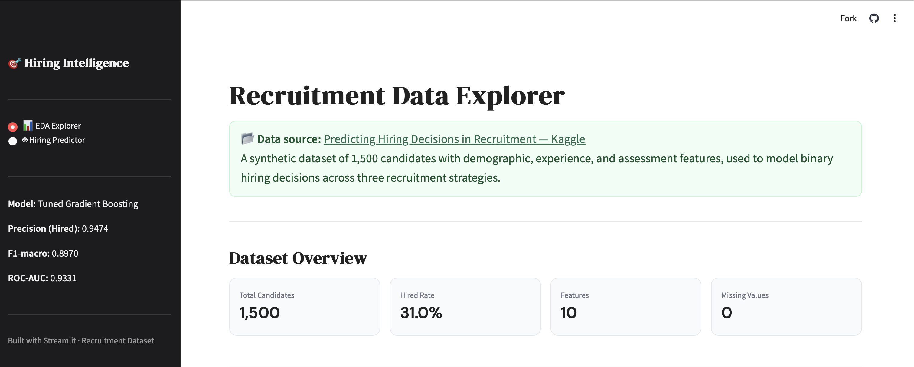
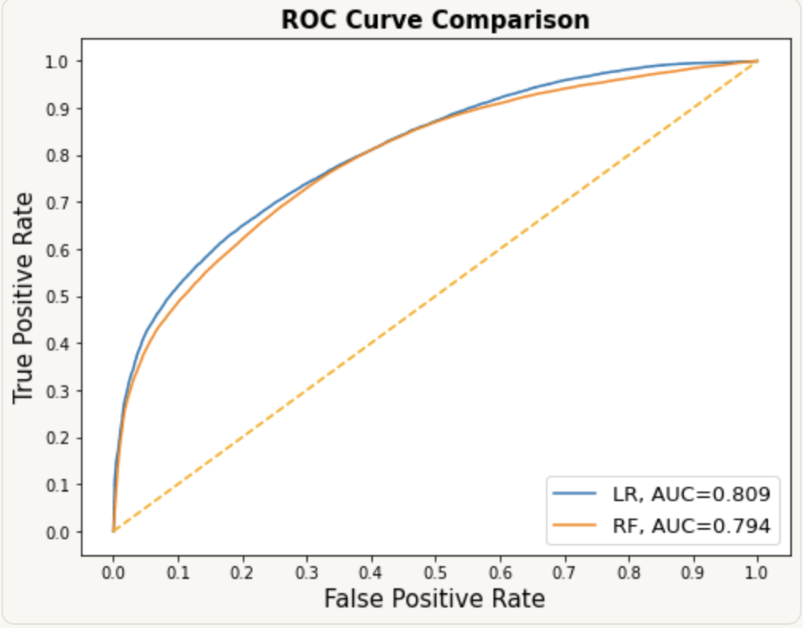
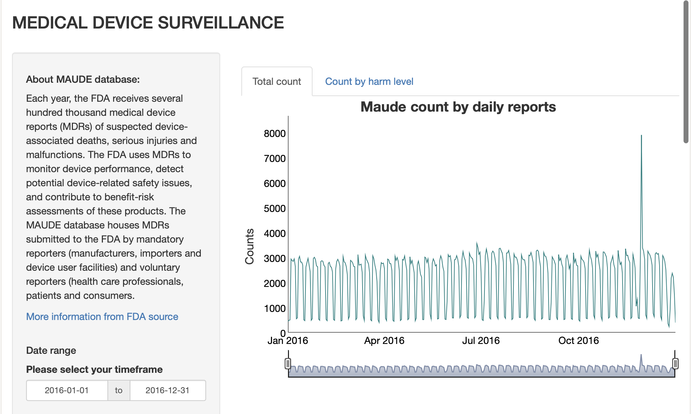
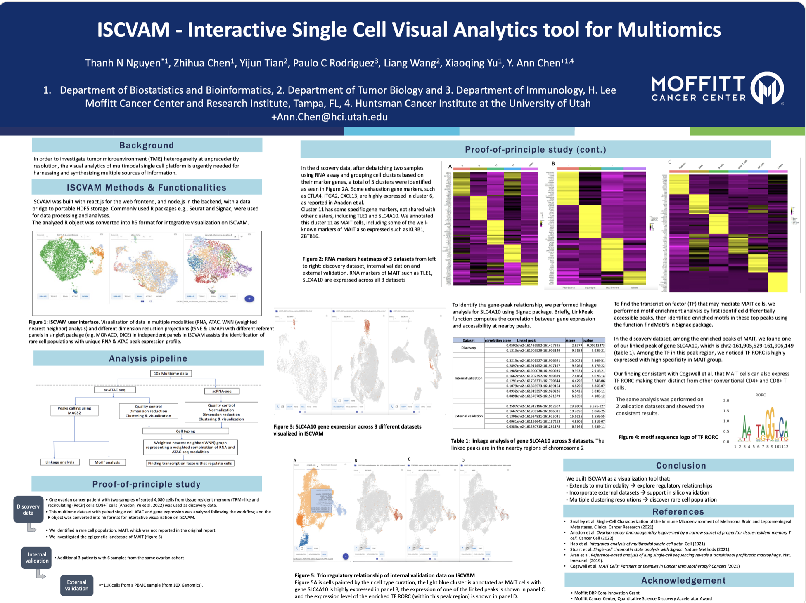

Thanh
M. Brown
Data Scientist with an M.S. in Operations Research and 4+ years working with complex, real-world data. I combine deep analytical experience with hands-on ML — building predictive models, scalable pipelines, and data products across health, public, and economic domains.
Capabilities
Technical Skills
Full-stack data science from raw data to deployed model.
Work
Portfolio Projects
Health data, clinical ML, large-scale EDA, and bioinformatics research.
01 — ML App · Streamlit · Scikit-learn New
Hiring Intelligence — Recruitment Outcome Predictor
End-to-end ML web app predicting candidate hiring outcomes using a tuned Gradient Boosting classifier — 94.7% precision, 93.3% ROC-AUC on 1,500 recruitment records. The web app features an EDA explorer and live candidate predictor with probability gauge and radar chart. Key finding: recruitment strategy (SHAP = 3.052) dominates all candidate-level signals — stronger than interview score, skill score, or education combined. A useful reminder that process design shapes outcomes as much as candidate quality does.

02 — Clinical ML · Python · Scikit-learn
Osteoporosis Risk Prediction with Ensemble Methods
Explored an osteoporosis case-control dataset through demographic-driven EDA and built classification models (Logistic Regression, Random Forest, SVM, Gradient Boosting). Top models achieved strong ROC performance, but consistently favored the negative class — highlighting the real-world challenges of identifying positive cases in imbalanced clinical data.

03 — FDA Data · R · Interactive App
FDA Medical Device Harm Trends — RShiny Dashboard
Built an interactive visualization app over the 2016 MAUDE (FDA medical device passive surveillance) dataset. Users explore temporal harm trends across device categories and manufacturers. Demonstrates stakeholder-facing data product design.

04 — Bioinformatics Research · Docker Deployment
ISCVAM — Interactive Visual Analytics for Single-Cell Multiomics Research
An interactive visual analytics platform for single-cell multiome data. Integrates sc-RNA and sc-ATAC data to study transcriptomic and epigenetic profiles simultaneously. Features flexible clustering to identify rare cell populations, and supports cross-dataset comparison of up to three datasets for reproducibility. Accepted for presentation at AACR 2023.

Background
About Me
I'm a Data Scientist with an M.S. in Operations Research and 4+ years working with some of the messiest, most complex data out there — clinical records, genomic profiles, large-scale census datasets. That background has made me unusually comfortable with ambiguity: when the data is sparse, domain-specific, and nothing works out of the box.
My work spans the full data science stack — statistical modeling, ML pipelines, big data processing with PySpark, and building data products that non-technical stakeholders can actually use. I care about end-to-end ownership: from raw, untidy data to a deployed, reproducible result.
Outside of health data, I've worked on economic risk modeling with U.S. Census data and large-scale EDA on income and healthcare spending patterns. I'm now focused on applying this foundation to general data science problems — anywhere rigorous analysis and practical ML can drive real decisions.